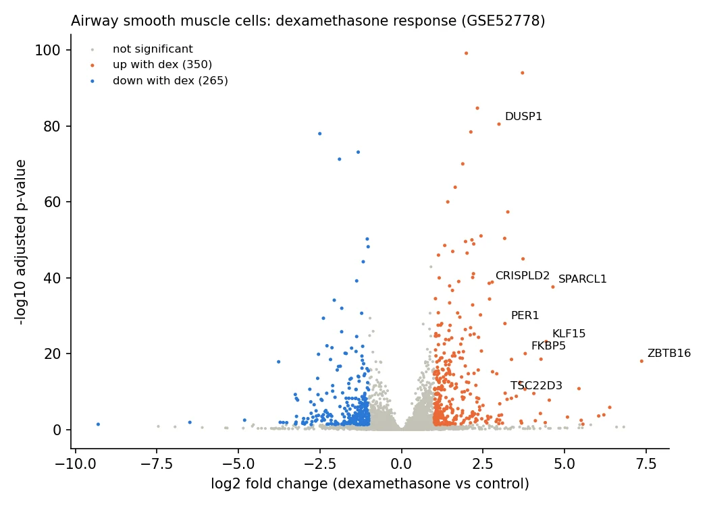
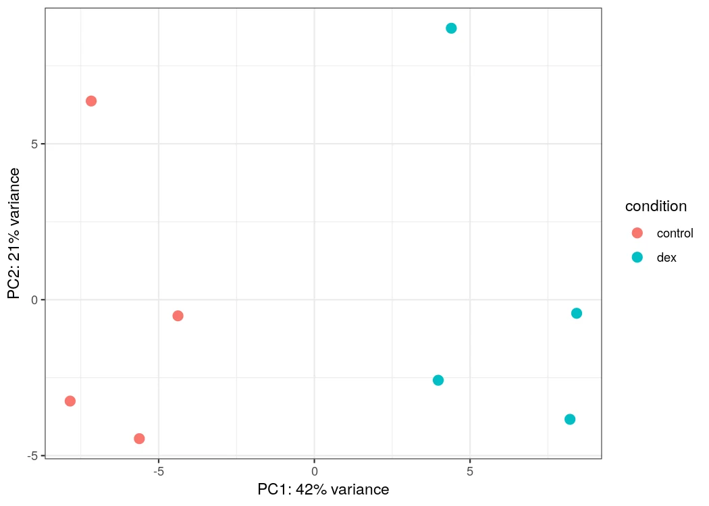

Transcriptomics · Pipelines
RNA-seq pipeline with Nextflow and Docker
A samplesheet-driven Nextflow DSL2 pipeline that goes from paired-end FASTQ to differential expression in one command. Two quantification routes, a configurable DESeq2 design formula, every tool in a versioned Docker container, and a real-data validation run that recovers the textbook biology.

RNA-seq that runs the same way twice
RNA-seq analyses are often assembled by hand, depend on one machine’s environment and are hard to reproduce. I wanted a pipeline that runs end to end from a samplesheet, in containers, and proves itself on real data rather than just on a toy test.
Two routes, one command
- QC and trimming. FastQC, then Cutadapt.
- Genome route. STAR alignment to sorted BAM, then fragment-level featureCounts.
- Transcript route. Salmon with gene-level summarisation, around 4 GB of RAM, so it fits a laptop.
- Differential expression. DESeq2 with a configurable design formula and an explicit reference level, so paired or blocked designs work and the sign of log2FC is unambiguous.
- Reporting. MultiQC across everything, plus MA and PCA plots.
Three versioned Docker images hold the tools. A tiny bundled test dataset runs in GitHub Actions on every push to check the wiring end to end.
Does it recover known biology?
I ran the pipeline on the public airway dataset: four donors’ airway smooth muscle cells, each untreated and treated with dexamethasone, with a paired ~ cell + condition design so each donor is compared with itself. Salmon mapped 93.9–95.3% of fragments in all eight samples.
| Gene | log2FC | padj |
|---|---|---|
| ZBTB16 | 7.36 | 9.6e−19 |
| SPARCL1 | 4.64 | 2.7e−38 |
| KLF15 | 4.44 | 6.5e−24 |
| FKBP5 | 3.79 | 9.6e−21 |
| TSC22D3 (GILZ) | 3.18 | 2.7e−10 |
| PER1 | 3.17 | 1.2e−28 |
| DUSP1 | 2.99 | 3.4e−81 |
| CRISPLD2 | 2.69 | 3.0e−39 |
Every classic dexamethasone target is strongly induced, including CRISPLD2, the headline gene of the original study. On the PCA, treatment separates samples on PC1 (42% of variance); PC2 mainly separates one donor, which is exactly the effect the paired design removes.

Limits worth knowing
- The airway run used the first 3 million read pairs per library to stay laptop-sized; rerunning the download script with
FULL=1fetches the complete files. - The STAR route needs about 32 GB of RAM to build a human index (roughly 16 GB with a sparse suffix array). On a 16 GB laptop, use Salmon.